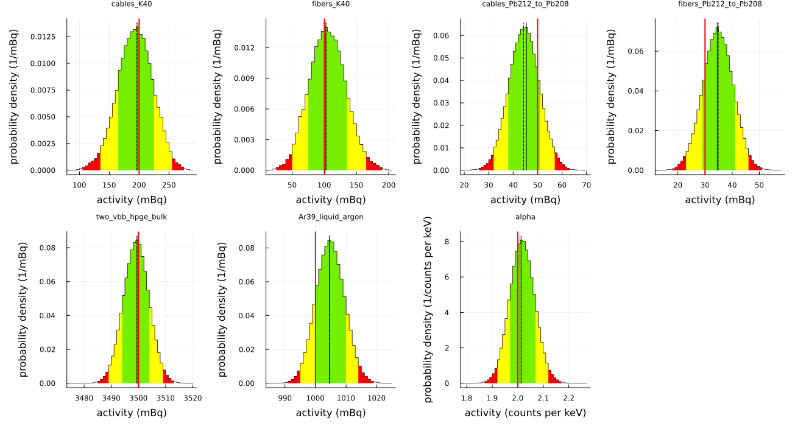
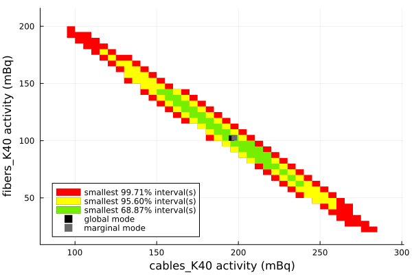
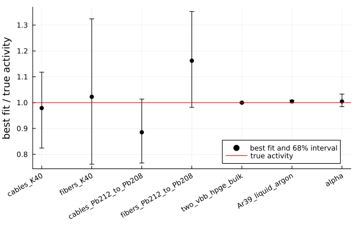
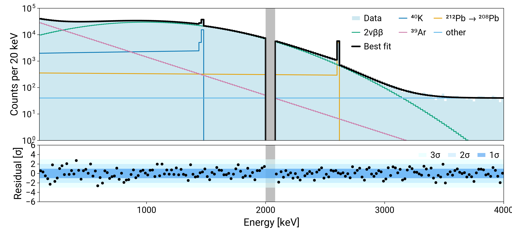

Tutorial: fitting a background spectrum
This tutorial fits a measured energy spectrum with a sum of simulated spectra, from reading the file, sampling the posterior and plotting the results. This runs every time the documentation is built.
The fit uses automatically generated fake data (pseudo-experiments). The measured spectrum is generated from known activities, so the result of the fit can be compared with the truth at the end.
Fake data
The input files are in test/test_files/tutorial of the repository, in LH5 format. They stand in for the output of a real simulation and for a measured spectrum. A real fit reads the files of the simulation instead. The script make_files.jl in the same directory makes them again.
- There is one file for each simulated source, for example
cables_K40.lh5, with the histogramspdf/mul1/icpcandpdf/mul1/bege(the two detector types) and the number of simulated primaries. The 2νββ decay has one file for each detector type. data.lh5has the measured histogramshist/mul1/icpcandhist/mul1/bege.
The sources with a γ line have a peak with a 1 keV sigma on a flat or linear continuum below the peak. The 2νββ spectrum is a broad Gaussian (600 keV width, centered at 1 MeV), and it makes about 70% of the counts. The $^{39}$Ar spectrum is an exponential with a decay constant of 300 keV and makes about 20% of the counts. The measured spectrum is generated from known activities with Poisson fluctuations, so the result of the fit can be compared with the truth at the end.
dir = "../../test/test_files/tutorial" # relative to docs/src
readdir(dir)9-element Vector{String}:
"cables_K40.lh5"
"cables_Pb212_to_Pb208.lh5"
"data.lh5"
"fibers_K40.lh5"
"fibers_Pb212_to_Pb208.lh5"
"hpge_bege_bulk_2vbb.lh5"
"hpge_icpc_bulk_2vbb.lh5"
"liquid_argon_Ar39.lh5"
"make_files.jl"Settings
using Refit
using StatsBase
livetime = 1.0e6 # s
e_low, e_high = 100, 4000 # keV, the range of the fit
binning = 20 # merge 20 bins of 1 keV into one
blind = (2015.0, 2065.0) # keV, a region around the 2039 keV Q-value that is not fitted
# expected counts = norm * activity * spectrum, see the note on units below
norm = 1e-3 * livetime
# the histograms of the measured spectrum and of each simulation are summed over these groups
spec = ["mul1/icpc", "mul1/bege"]In the standard case, where the PDFs are normalized, the fit parameters represent the activity of the sources. The unit of the activity is the inverse of the unit of the livetime, or Bq if the livetime is in s. In many cases it is more convenient to use a different unit. For example, scaling norm by 10⁻³ changes the unit of the activity to mBq, as done here.
Reading the data
read_hist reads one histogram. The data of the two detector types are added with add_histograms.
data = add_histograms([read_hist("hist/$s", joinpath(dir, "data.lh5")) for s in spec])StatsBase.Histogram{Float64, 1, Tuple{StepRangeLen{Float64, Base.TwicePrecision{Float64}, Base.TwicePrecision{Float64}, Int64}}}
edges:
0.0:1.0:4000.0
weights: [2546.0, 2442.0, 2526.0, 2492.0, 2494.0, 2438.0, 2409.0, 2494.0, 2467.0, 2519.0 … 2.0, 4.0, 4.0, 2.0, 0.0, 3.0, 2.0, 4.0, 1.0, 2.0]
closed: left
isdensity: falseReading the simulated spectra
Each source has its own file. read_pdf sums the groups and divides by the number of simulated primaries, so that the spectrum is in counts per primary. The name of each spectrum is a Symbol, the activity of the source gets the same name.
groups = ["pdf/$s" for s in spec]
components = ["cables", "fibers"]
isotopes = ["K40", "Pb212_to_Pb208"]
mc_dict = Dict(
Symbol(comp, "_", iso) => read_pdf(joinpath(dir, "$(comp)_$iso.lh5"); groups) for
comp in components for iso in isotopes
)
keys(mc_dict)KeySet for a Dict{Symbol, StatsBase.Histogram{Float64, 1, Tuple{StepRangeLen{Float64, Base.TwicePrecision{Float64}, Base.TwicePrecision{Float64}, Int64}}}} with 4 entries. Keys:
:fibers_Pb212_to_Pb208
:cables_K40
:fibers_K40
:cables_Pb212_to_Pb208The 2νββ decay is simulated once for each detector type. read_pdf accepts a dictionary from file name to weight and returns the weighted average of the spectra. The weights are normalised. Here the weight is the mass of each detector type in kg.
mass = Dict("icpc" => 80.0, "bege" => 20.0)
bulk = Dict(joinpath(dir, "hpge_$(t)_bulk_2vbb.lh5") => w for (t, w) in mass)
mc_dict[:two_vbb_hpge_bulk] = read_pdf(bulk; groups)The $^{39}$Ar decay has one file.
mc_dict[:Ar39_liquid_argon] = read_pdf(joinpath(dir, "liquid_argon_Ar39.lh5"); groups)Alpha events have no simulation. As a simple model they are a constant spectrum. Its activity is the number of counts in each 1 keV bin, so the spectrum is 1 / norm in every bin.
mc_dict[:alpha] = Histogram(data.edges, fill(1 / norm, length(data.weights)))Forward model and likelihood
The forward model maps the activities to the expected counts in each energy bin. The likelihood compares these with the measured counts, which are taken from the data in the same bins.
model, bin_edges = build_forward_model(mc_dict; e_low, e_high, blind, binning, norm)
counts = get_counts(data, bin_edges)
likelihood = build_likelihood(counts, model)Ranges for the activities
The fit needs a range for each activity. get_priors estimates it from the data (see Priors). The reference ranges give the energy window of a peak of each isotope in keV. The 1461 keV line of $^{40}$K and the 2615 keV line of $^{208}$Tl limit the activities of these sources.
ref_ranges = Dict(:K40 => (1456, 1466), :Pb212_to_Pb208 => (2610, 2620))
ranges = get_priors(mc_dict, data; ref_ranges, e_low, e_high, blind, norm)Dict{Symbol, Any} with 7 entries:
:fibers_Pb212_to_Pb208 => 0.0 .. 5186.73
:alpha => 0.0 .. 770.385
:cables_K40 => 0.0 .. 5267.81
:fibers_K40 => 0.0 .. 5162.57
:cables_Pb212_to_Pb208 => 0.0 .. 5255.73
:Ar39_liquid_argon => 0.0 .. 6900.73
:two_vbb_hpge_bulk => 0.0 .. 5081.74A range can be changed by hand where the guess is poor, for example ranges[:two_vbb_hpge_bulk] = 0.0 .. 20.0 (with using IntervalSets).
build_prior_dist makes the prior: a uniform distribution on the range of each activity. rand(prior) draws one random value for each activity, a named tuple that goes directly into the model.
prior = build_prior_dist(ranges)
rand(prior)(fibers_Pb212_to_Pb208 = 2410.4868635070607, alpha = 30.301025181788702, cables_K40 = 1441.5466908930168, fibers_K40 = 3571.56660581935, cables_Pb212_to_Pb208 = 3943.408692025786, Ar39_liquid_argon = 3707.3611298275414, two_vbb_hpge_bulk = 1270.2663182119613)Sampling the posterior
BAT.jl samples the posterior with a Markov chain Monte Carlo.
using BAT
posterior = PosteriorMeasure(likelihood, prior)
samples = bat_sample(
posterior,
TransformedMCMC(
proposal = RandomWalk(),
strict = false,
burnin = MCMCMultiCycleBurnin(nsteps_per_cycle = 50_000, max_ncycles = 50),
nsteps = 5 * 10^5,
nchains = 4,
),
).result[ Info: MCMCChainPoolInit: trying to generate 4 viable MCMC chain state(s).
[ Info: Selected 4 MCMC chain state(s).
[ Info: Begin tuning of 4 MCMC chain(s).
[ Info: MCMC Tuning cycle 1 finished, 4 chains, 4 tuned, 0 converged.
[ Info: MCMC Tuning cycle 2 finished, 4 chains, 3 tuned, 0 converged.
[ Info: MCMC Tuning cycle 3 finished, 4 chains, 4 tuned, 0 converged.
[ Info: MCMC Tuning cycle 4 finished, 4 chains, 4 tuned, 0 converged.
[ Info: MCMC Tuning cycle 5 finished, 4 chains, 4 tuned, 0 converged.
[ Info: MCMC Tuning cycle 6 finished, 4 chains, 4 tuned, 0 converged.
[ Info: MCMC Tuning cycle 7 finished, 4 chains, 4 tuned, 4 converged.
[ Info: MCMC tuning of 4 chains successful after 7 cycle(s).
[ Info: Running post-tuning stabilization steps for 4 MCMC chain(s).
[ Info: Generate main samples using 4 MCMC chain(s).Result
The activities used to make the fake data are:
true_activities = ( # mBq
cables_K40 = 200.0,
fibers_K40 = 100.0,
cables_Pb212_to_Pb208 = 50.0,
fibers_Pb212_to_Pb208 = 30.0,
two_vbb_hpge_bulk = 3500.0,
Ar39_liquid_argon = 1000.0,
)
true_alpha = 2.0 # counts per 1 keV binThe marginal posterior of each activity is plotted with the plot recipes of BAT.jl. The colored regions are the smallest intervals that contain 68%, 95% and 99.7% of the distribution, the dashed line is the mode and the red line is the true activity used to make the measured spectrum.
using Plots
truth = merge(true_activities, (alpha = true_alpha,))
panels = map(collect(keys(truth))) do name
unit = name == :alpha ? "counts per keV" : "mBq"
plot(
samples,
name;
mean = false,
std = false,
globalmode = true,
nbins = 50,
title = string(name),
titlefontsize = 8,
xlabel = "activity ($unit)",
ylabel = "probability density (1/$unit)",
)
vline!([truth[name]]; color = :red, linewidth = 2, label = "")
end
plot(
panels...;
layout = (2, 4),
size = (1300, 700),
legend = false,
left_margin = 8Plots.mm,
bottom_margin = 6Plots.mm,
top_margin = 3Plots.mm,
)
A pair of activities shows their correlation. The $^{40}$K activities of the cables and of the fibers are anticorrelated, because the data constrain mostly their sum:
plot(
samples,
(:cables_K40, :fibers_K40);
nbins = 50,
globalmode = true,
legend = :bottomleft,
xlabel = "cables_K40 activity (mBq)",
ylabel = "fibers_K40 activity (mBq)",
)
The best fit is the global mode. The uncertainty of each activity is the smallest 68% credible interval: the smallest interval that contains 68% of its posterior density. BAT.jl computes it for all the activities at once, and mode = :connected gives a single interval for each one. Activities differ by orders of magnitude, so the plot shows the best fit divided by the true value. A good fit is consistent with 1.
best = mode(samples)
intervals = map(first, BAT.smallest_credible_intervals(samples; p = 0.68, mode = :connected))
names = collect(keys(truth))
fit = [best[n] / truth[n] for n in names]
lower = [intervals[n].left / truth[n] for n in names]
upper = [intervals[n].right / truth[n] for n in names]
scatter(
string.(names),
fit;
yerror = (max.(fit .- lower, 0), max.(upper .- fit, 0)),
color = :black,
label = "best fit and 68% interval",
ylabel = "best fit / true activity",
xrotation = 30,
bottom_margin = 12Plots.mm,
legend = :bottomright,
)
hline!([1]; color = :red, label = "true activity")
Finally, the prediction of the best fit is compared with the measured counts. The sources are summed into a few groups and plotted with CairoMakie, here in the LEGEND style of LegendMakie.jl. See Plotting for the functions that are used and how the plot can be customised.
using LegendMakie
import Formatimport CairoMakie
data_hist = counts_to_histogram(counts, bin_edges)
hists = get_best_fit_histograms(best, model, bin_edges)
# sum the sources into a few lines
grouped = group_histograms(
hists,
[
"⁴⁰K" => r"K40",
"²¹²Pb → ²⁰⁸Pb" => r"Pb212",
"2νββ" => r"two_vbb",
"³⁹Ar" => r"Ar39",
"other" => :rest,
],
)
fig, ax, ax_res = fit_axes(; ylabel = "Counts per $binning keV")
# the data, the groups of sources (with the colors of the palette) and the best fit
plot_hist!(ax, data_hist; filled = true, alpha = 0.6, color = :lightblue, label = "Data")
for (label, h) in grouped
label == :total || plot_hist!(ax, h; label = string(label))
end
plot_hist!(ax, grouped[:total]; color = :black, linewidth = 4, label = "Best fit")
# the blinded region (the empty bins) and the residuals
mark_blinded!(ax, grouped[:total])
mark_blinded!(ax_res, grouped[:total])
plot_residuals!(ax_res, grouped[:total], data_hist)
CairoMakie.xlims!(ax, e_low, e_high)
CairoMakie.ylims!(ax, 1, 1e5)
CairoMakie.ylims!(ax_res, -6, 6)
CairoMakie.axislegend(ax; nbanks = 3)
CairoMakie.axislegend(ax_res; nbanks = 3)
fig
Saving the results
The results are saved in formats for long term preservation (see Saving the results). The posterior samples are written by BAT.jl to an HDF5 file, which needs the package HDF5. The best fit histograms, of the total and of each source, and the measured spectrum go into an LH5 file. The values of the activities with the smallest 68% interval go into a YAML file.
using HDF5
outdir = mktempdir()
bat_write(joinpath(outdir, "samples.h5"), samples)
write_best_fit(joinpath(outdir, "best_fit.lh5"), hists; data = data_hist)
write_parameter_values(joinpath(outdir, "parameters.yaml"), best, intervals; level = 0.68)
readdir(outdir)3-element Vector{String}:
"best_fit.lh5"
"parameters.yaml"
"samples.h5"The YAML file is plain text:
print(read(joinpath(outdir, "parameters.yaml"), String))credible_level: 0.68
parameters:
fibers_Pb212_to_Pb208:
best_fit: 34.864901595725335
low: 29.446169684546735
high: 40.561064884573746
alpha:
best_fit: 2.009154720134364
low: 1.9686180329142435
high: 2.066186950336854
cables_K40:
best_fit: 195.76895981350094
low: 164.82529241851418
high: 223.4964743106147
fibers_K40:
best_fit: 102.25959008084138
low: 76.1630509840067
high: 132.39559400988526
cables_Pb212_to_Pb208:
best_fit: 44.26229783827031
low: 38.315022698213085
high: 50.67743806103673
Ar39_liquid_argon:
best_fit: 1004.6143431456771
low: 1000.0549478179196
high: 1009.4274987901757
two_vbb_hpge_bulk:
best_fit: 3499.338390157033
low: 3494.541477942581
high: 3503.960086461518The saved samples and histograms read back as they were written:
samples_saved = bat_read(joinpath(outdir, "samples.h5")).result
fit_saved = read_hist("best_fit/total", joinpath(outdir, "best_fit.lh5"))
(length(samples_saved) == length(samples), fit_saved.weights == hists[:total].weights)(true, true)